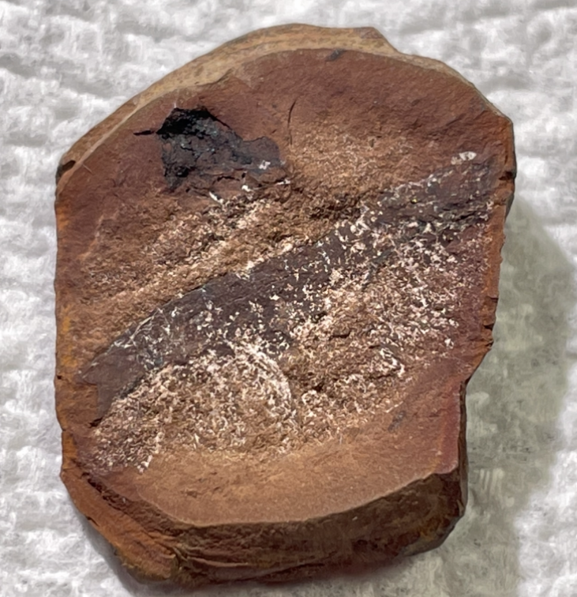
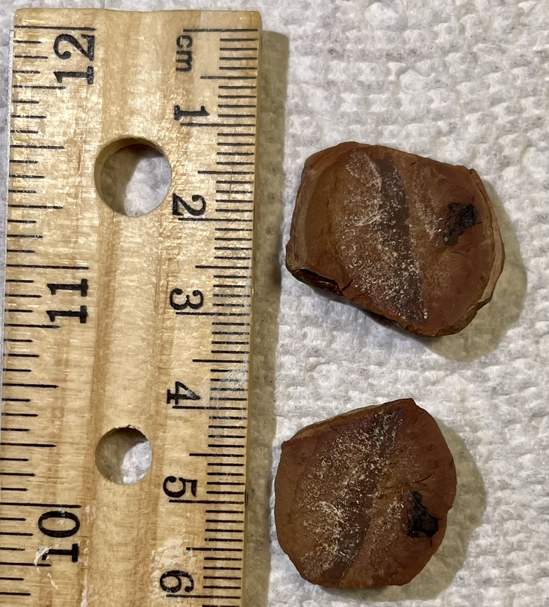
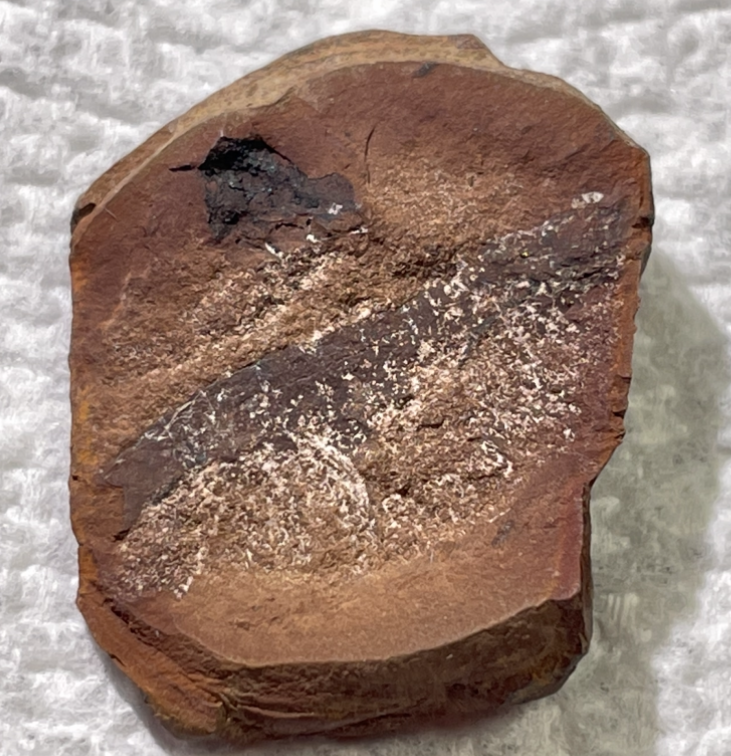
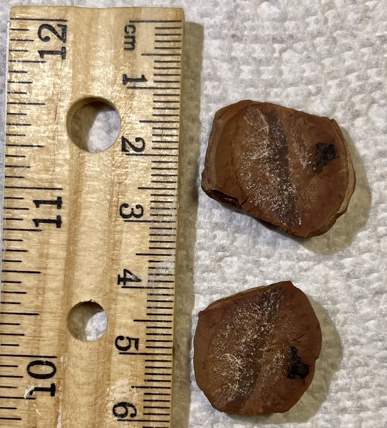

Arthropod
Indet. Millipede
Pennsylvanian
Crock Hey Open Cast, Wigan, Lancashire, UK
Size:
ID: S7-Art-Pen-nan-nan
PRICE: $150
A rare split-pair millipede nodule from the UK, which may be prepped-out further. I believe this locality is no longer accessible.
 
